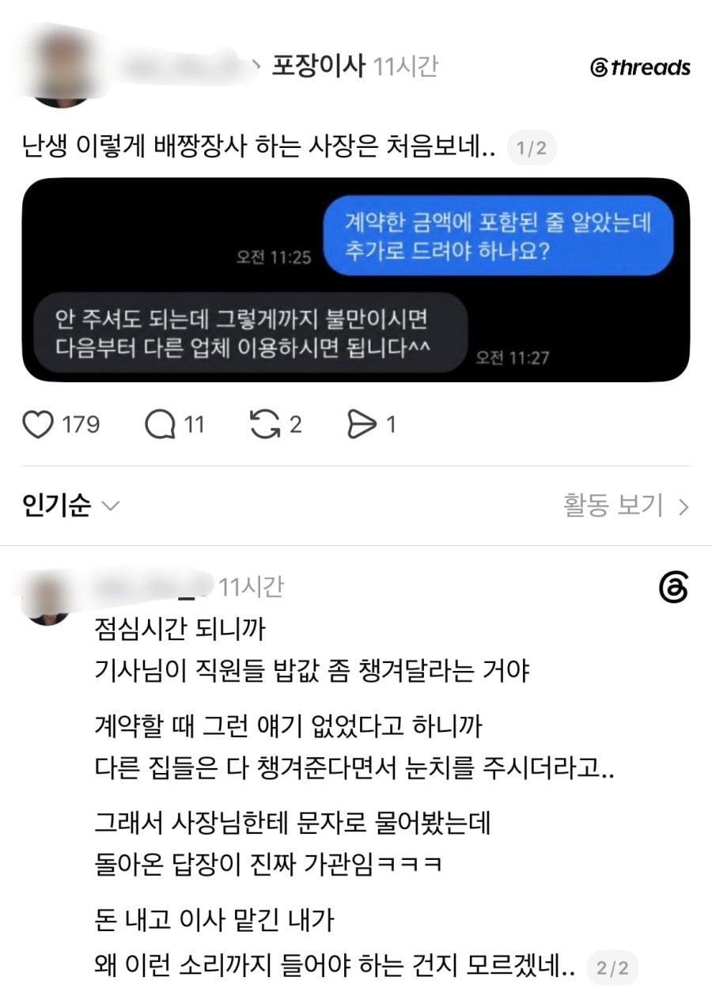
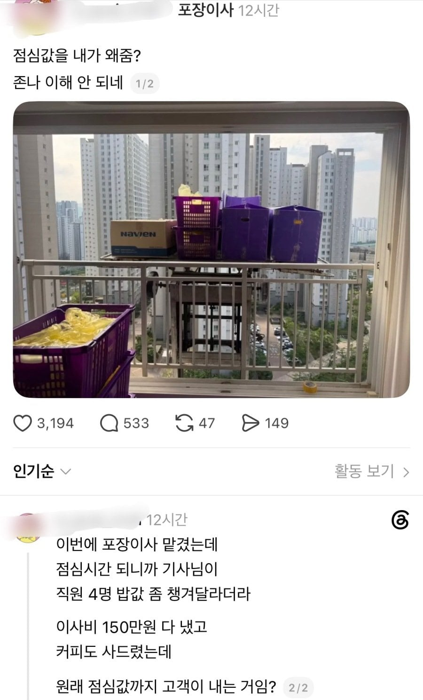

요즘은 바뀌었는데 아직도 저러나
커피 값 까진 이해하는데 점심값은 양심이 죽었나 ㅋㅋㅋ
지금 이사업체 쓰기 애매해진게
그냥 트럭 차주가 사업자 등록 해놓고 고려인 일당꾼들 데리고 다니면서 일쳐냄
멀쩡히 일하는거 아마 주방 식기 냉장고 관련 아줌마 1인 빼고서는 다 개판일거임
견적내러 온 사람이 커피는 사주고 점심은 절대 사주지 말라던데 아저씨들도 요구 안함
진짜 케바케임... 난 내가 이사 너무힘드신거같아서 그냥 돈더드림ㅋㅋ
난 인부들 밥 사주는스타일이긴한데 말하기전에
내꺼해주는거니까
근대 대놓고 사달라하면 불쾌하지
느그 직원 밥값은 느그가 알아서 해야지 애미
벅벅 밥줘
요새 저런 서비스들 다 직영 아니고 하청이라 저럼. 150만원 플랫폼에 결제하면 실제 실행하는 업체한테는 120내외 돌아감. 그러니까 막 현장에서 없던 추가요금이니 밥값이니 요구하는거. 자기가 평판관리니 영업이니 직접해야하는 업체면 저런 요구 쉽지 않지.
형이 제대로 알려준다. 일단 당근, 크몽, 숨고에서는 절대 구하지마라.
리뷰조작은 기본이고 ( 별4개만 줘도 바로 전화서 리뷰 지우라고 개ㅈㄹ하면서 연락온다. 심지어 집주소 안다고 협박도 하는 ㅅ끼들도 있음)
그리고 이런 양아치 업체 특징이 뭐냐면 모집은 지들이 하고 그 밑으로 다른 외주업체를 써서 사람을 돌린다.
그렇기 때매 소통도 안되고, 뭔가 마음에 안들고 ㅈ같아도 컴플래인해봤자 소용이 없어지는 구조다.
이런 회사는 외노자쓰고 한탕한탕 일용직을 쓰기 때문에 청소 스킬도 ㅈ이고 매너조 ㅈ이다. 집에 과자나 음식, 잔돈도 사라지는일이 부지기 수다.
여기서 부터 적어라.
상담하는 사람이랑 직접와서 청소하는 사람이 "동일"한지 확인해라.
이것만 확인되도 70점은 먹고가는거다.
자기 이름, 자기 간판달고 일하는거라 대응이나 서비스가 100배는 좋다.
근데 이런거 생각하기 싫고 짜증난다 하면 동네에 이사업체 (경력이 오래된) 업체를 써라. 그것도 귀찮다? 그러면 이사 대기업써라 그리고 무조건 견적서, 계약서는 받아놔라.
추가금 없다는 항목은 꼭 넣어두고.
이사업체가 사실 100점짜리는 절대 없다.
아무래도 몸만써도 할수 있는 진입하기 쉬운사업이다 보니 양아치들도 많고 몰상식한 사람도 많다.
그러니까 70-80점만되도 그러녀니 하는 마음도 필요하다.
이사 청소업체도 좀 적어주면 안되낭
맞다 비싼 물건의 파손, 분실만 없어도 엄청나게 운이 좋은 거라고 생각해야힘
비싼거 가져가나?
고가 위싀키 와인 화장품이런거 많이 없어진다 들었음
견적낸직원은 당일에 이사하러 올때나 볼텐데.. 동일한지 어케 확인함?
정말 간단한것임 그냥 대놓고 물어봐 견적받기 전에 "지금 전화받으신 사장님께서도 이사작업도 같이하시는거죠?ㅎㅎ" 이렇게
이사는 그래도 어지간하면 잘하는데 청소는 ㅅㅂ 청소했다고 사진찍는 거기만하고 나머진 안해놓고 잠수타는데도 있더라
이사 업체랑 일대일로 하면 개지랄나도 신고하라고 씹으니까 대행사 껴서 하는게 좋음 우리도 이사할때 물건 떨어뜨려서 바닥 개박살났는데 쌩까려고 하길래 대행사에 항의하니까 수리비 돌려받음
4년 됐나 120에 했는데 10커피값 하시라고 따로 주긴 했음. 좀 잘 해달란 의미였는데 승질 ㅈㄴ 내고 어휴.. 그 뭐 밑에 직원들은 그냥저냥인데 그 무리 리더급 되는 놈이 싹퉁 바가지 없었지.
오전에 포장하고 밥먹고 이사갈집 오시던데 ㅋㅋ
아정당인가 거기도 추가금 당하면 신고 하라던데 맞냐?
오래된 문화라더라 팁주고 밥값,음료수 챙겨주고
왜 주는거냐고 물어보니까 다른집보다 신경써달라고 주는거라더라
그거 주면 버릇 나빠지는거 아니냐 하니까 알 바 아니래 내 집만 잘하면 된다길래
대화가 안통하겠다 싶어서 음~하고 길게 대화안함 ㅋㅋ
직원 밥을 왜 고객이 사주냐고 ㅋㅋㅋ
돈 줬잔아
나 돈 주고 사서 쳐먹어

나 원룸 이사할땐 용달 아저씨들은 오히려 바쁘다고 밥사준데도 안먹고(밥때되서)간다그래서
걍 식사하라고 5만원씩 챙겨주고 그랬는데
ㅋㅋㅋ 나 이사할때 65인치 티비, 스타일러, 세탁기, 건조기, 냉장고, 대리석 식탁, 라지킹 침대, 프레임 옷걸이 두개, 4단 수납장 하나 혼자 살면서 이사한거라 짐 별로 없었긴한데 반포장이사 120만원 달라했었는데 이사하는날 이모한분 오셔서 짐 다 정리해주고 가드라,, 자기들도 짐도 별로 없는데 돈받기 미안했는지
어릴때 이사업체가 부모님한테 식사좀 시켜달라고 해서 짜장면 4그릇 시켰더니 탕수육도 시켜달라고 했던거 기억나네